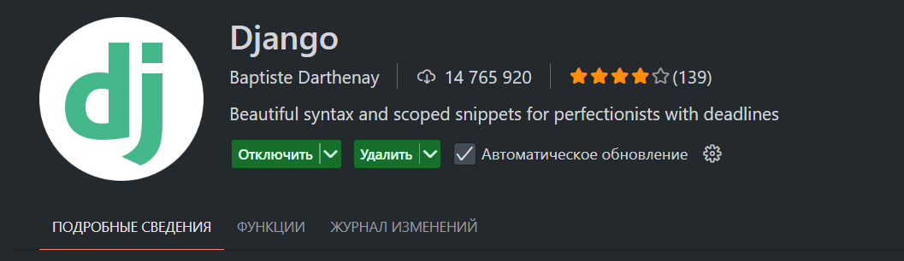

Шаблонизатор Django - это мощный инструмент для генерации HTML на сервере. Он позволяет отделить логику представления от визуального оформления, следуя принципам MTV (Model-Template-View).
Шаблонизатор Django решает ключевую проблему смешивания Python-кода и HTML в одном файле. Вместо этого он предоставляет:
[!info]
Основные возможности шаблонизатора 🔍
- Переменные:
{{ variable }}- Теги:
{% tag %}- Фильтры:
{{ value|filter }}- Наследование:
{% extends "base.html" %}
Шаблонизатор автоматически экранирует HTML, предотвращая XSS-атаки, но позволяет явно указать, когда содержимое безопасно с помощью фильтра safe.
Django предоставляет гибкую систему расположения шаблонов, позволяющую организовать их наиболее удобным способом.
По умолчанию Django ищет шаблоны в папке templates каждого установленного приложения, рекурсивно обходя их. Это позволяет каждому приложению иметь собственные шаблоны.
# Пример структуры для приложения core
core/
templates/
core/
thanks.html
В представлении такой шаблон будет указываться как core/thanks.html:
def thanks(request):
return render(request, "core/thanks.html")
[!warning]
Почему сложная структура? ⚠️
Использование подпапки с именем приложения внутри
templatesпредотвращает конфликты имен, когда несколько приложений имеют шаблоны с одинаковыми именами.
Для небольших проектов можно хранить все шаблоны в корневой папке templates. Для этого нужно изменить настройки:
# settings.py
TEMPLATES = [
{
'BACKEND': 'django.template.backends.django.DjangoTemplates',
'DIRS': [BASE_DIR / 'templates'], # Добавляем корневую папку templates
'APP_DIRS': True,
}
]
BASE_DIR - это путь к корню проекта, а BASE_DIR / 'templates' создает полный путь к папке шаблонов. Например:
BASE_DIR = Path(__file__).resolve().parent.parent
# Результат: C:\PY\ПРИМЕРЫ КОДА\django_consult_413
Для удобной работы с шаблонами Django в VS Code рекомендуется установить специальное расширение.

Расширение Django от Baptiste Darthenay добавляет:
*.html и *.djhtmlПосле установки рекомендуется добавить в настройки VS Code:
// === НАСТРОЙКИ DJANGO И WEB-РАЗРАБОТКИ ===
"emmet.includeLanguages": {
"django-html": "html"
},
"emmet.triggerExpansionOnTab": true,
"emmet.showSuggestionsAsSnippets": true,
"emmet.showExpandedAbbreviation": "always",
"emmet.useInlineCompletions": true,
"emmet.extensionsPath": [],
"emmet.syntaxProfiles": {
"html": {
"filters.commentAfter": "<!-- /{[#]}/ -->",
"attributes": {
"class": "class",
"id": "id",
"for": "for"
}
},
"django-html": {
"filters.commentAfter": "{# /{[#]}/ #}"
}
},
"files.associations": {
"**/*.html": "html",
"**/templates/*/*.html": "django-html",
"**/templates/*/*/*.html": "django-html",
"**/templates/*": "django-html",
"**/requirements{/**,*}.{txt,in}": "pip-requirements"
},
"[django-html]": {
"breadcrumbs.showClasses": true,
"editor.formatOnSave": false,
"editor.quickSuggestions": {
"other": true,
"comments": true,
"strings": true
}
},
А так же
````json "python.analysis.packageIndexDepths": [ { "name": "django", "depth": 10, "includeAllSymbols": true }, { "name": "selenium", "depth": 3, "includeAllSymbols": true }, { "name": "sqlalchemy", "depth": 3, "includeAllSymbols": true }, { "name": "sqlite3", "depth": 3, "includeAllSymbols": true } ],
Эти настройки отключают автоформатирование (которое может сломать шаблоны) и включают подсказки во всех контекстах.
## Первый шаблон Django 🎯
Создадим простой шаблон `thanks.html` в корневой папке `templates`:
```html
<!DOCTYPE html>
<html>
<head>
<title>Спасибо!</title>
</head>
<body>
<h1>Спасибо за ваш заказ!</h1>
</body>
</html>
Для его отображения используем функцию render:
def thanks(request):
return render(request, "thanks.html")
Функция render принимает два обязательных аргумента:
request)templates[!info]
Рендеринг на сервере vs клиенте 🔄
Django выполняет рендеринг шаблонов на сервере, отправляя клиенту уже готовый HTML. Это отличается от современных JavaScript-фреймворков, где рендеринг часто происходит на стороне клиента.